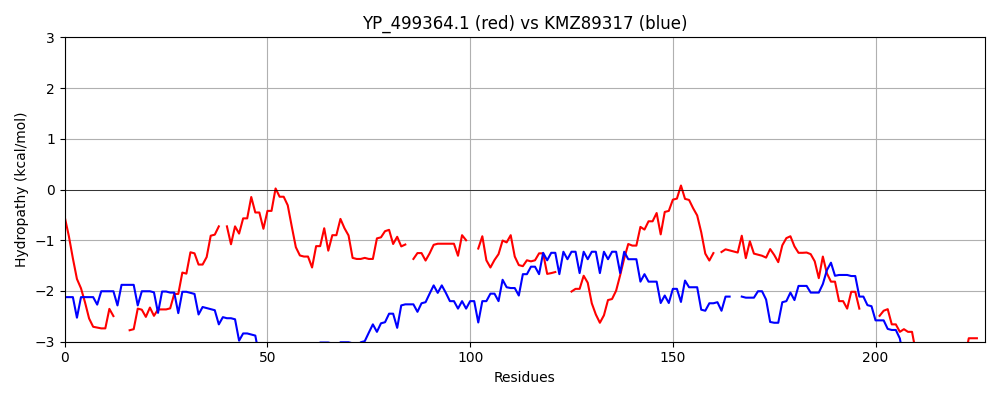

Hit Accession: KMZ89317
Hit TCID: 9.B.367.1.2
Hit Description: gnl|BL_ORD_ID|6006 gnl|TC-DB|KMZ89317.1|9.B.367.1.2 knob-associated His-rich protein [Plasmodium vivax Brazil I]
Mach Len: 227
e:0.000000
Query TMS Count : 0
Hit TMS Count: 0
TMS-Overlap Score: 0.000000
Predicted Substrates:None
BLAST Alignment:
Score: 127 , Bit scores: 53 bits, E-value: 2.6e-08, Alignment length: 227, Percentage identity: 26
Query: 22 QDSAKKESTSHKK---KENDNEELNEELKEFKSKKNMDI-KIKGDTIVSDKFEAKIKEPFIINEKDEKKKYIAFKMEITAKKDDK-DLNPSSISHDYINI--TQDDKNTVNKLRDGYLLSDK---KYKDWTEHNQDQIKKGKTAQAMFIYELRGDGNINLN-VHKYSEDKTVDSKSFKFSKLKTEDFSHRAETREEV----EKKEKEFEEEYKKEQEREKEKEKQKD 233
Q+ A +E + ++ +E + EE+N+E K +I K + S K E+K KE +K E KK A K E K+ + + N I+ + N T +++ +++ + +++ + + E N ++I + E D N N +H+ E KT + K + E+ + AE ++ EKKE+E +EE KKE+++EK+KEK+K+
Sbjct: 417 QEEANQEEVNQEEVNQEEVNQEEVNQEEANQKEINKEEINKKETKKKESKKKESKKKE----TKKKETKKKEAKKKETKKKETNTGETNTEEINKEETNTGETNEEETNTEEIKTEEINTEEINTEEINTEEINTEEINTEEINTEEINDEKTNDENTNAEGIHQ--EKKTDEKADEKTDVEEKEEVNTNAEKTQDTITTHEKKEEEKKEEKKKEKKKEKKKEKKKE 637 | Protein Hydropathy Plots: |
|---|
| |
Pairwise Alignment-Hydropathy Plot:
|
|---|
|  |